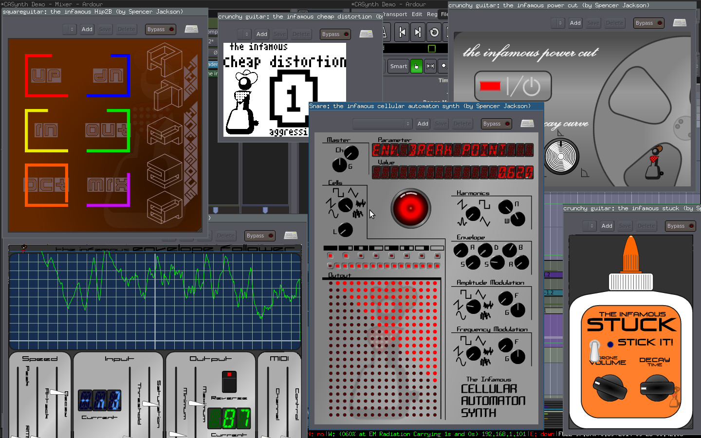
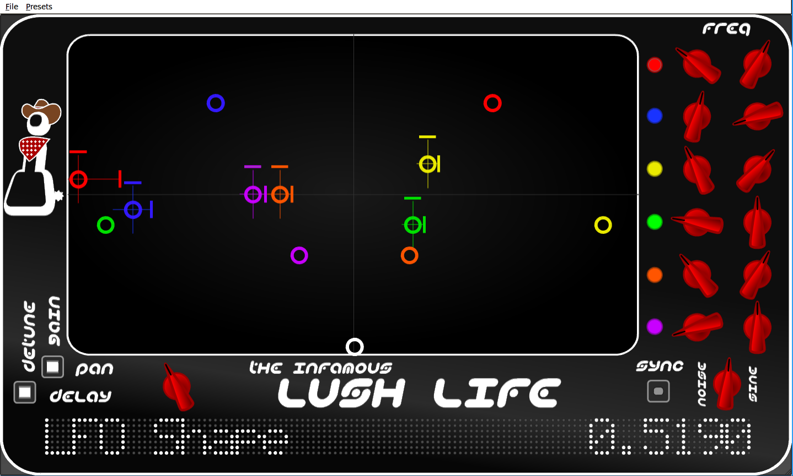
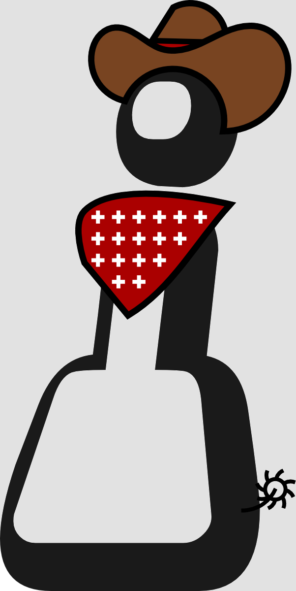
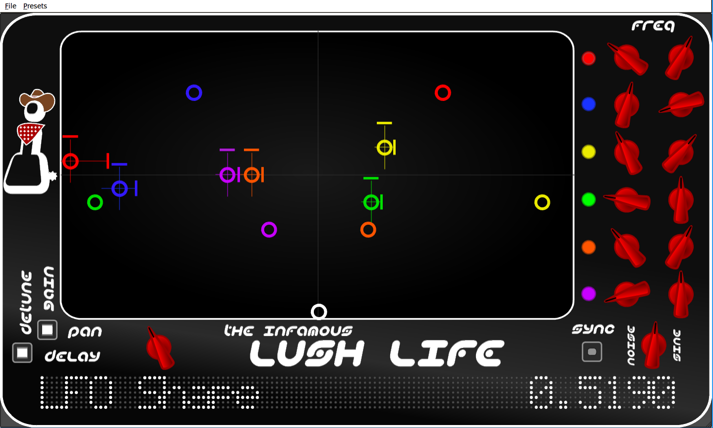
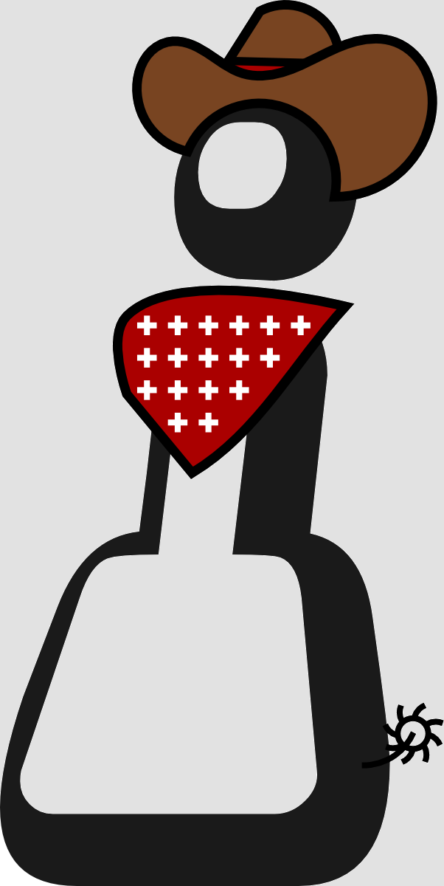
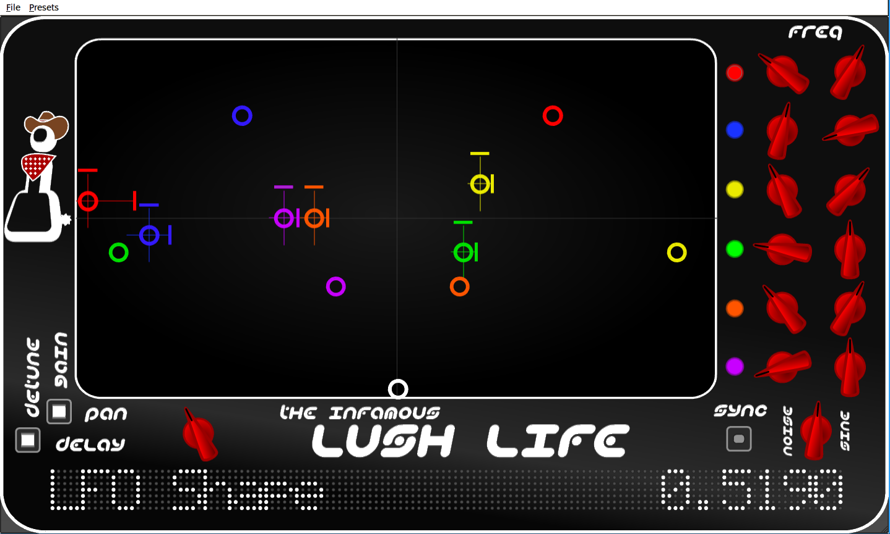
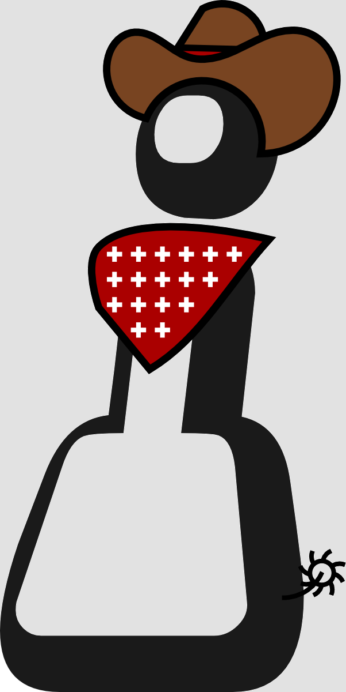

Get Creative...



 





Infamous Plugins is a collection of open-source LV2 plugins. It hopefully helps fill some holes, supplying non-existing plugins for linux audio. There is little interest in creating ANOTHER compressor, or ANOTHER EQ when myriad other excellent lv2 versions of such already exist. At least until I become interested in making one of those things and feel I can do something different...
- To see and learn about the current plugins go here...
- To download/file bug reports/get support go here...
- To learn about who this infamous developer is go here...
- And if you want to donate to show appreciation for these plugins, go here...